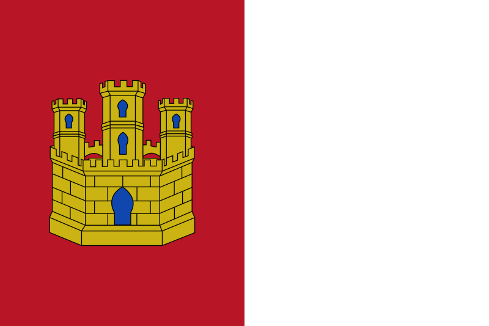
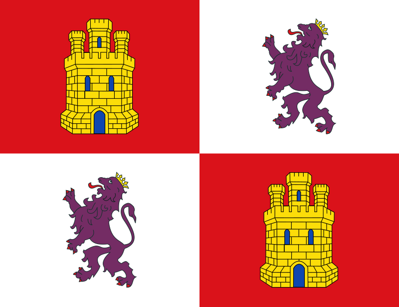
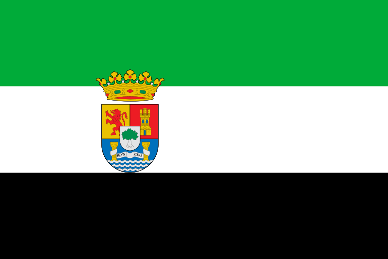
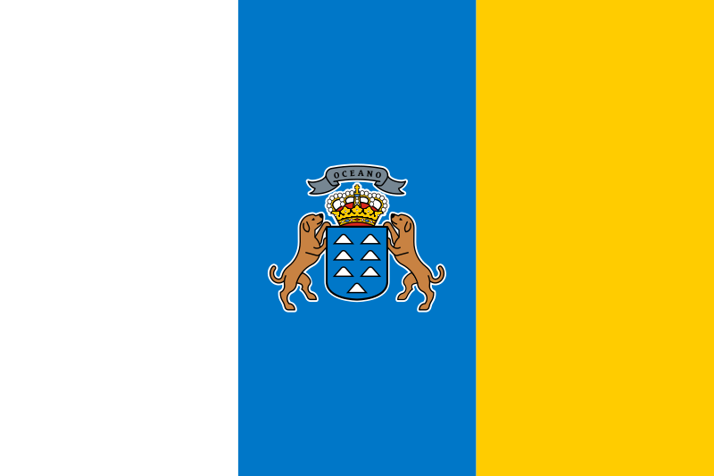
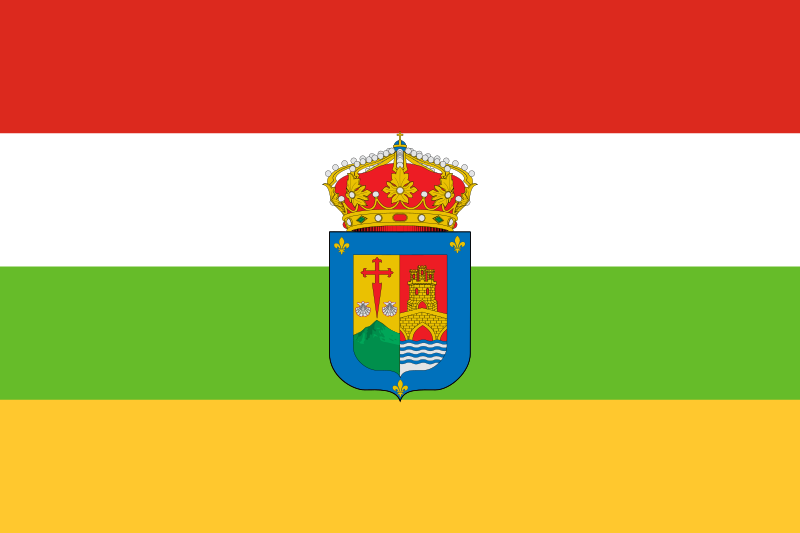
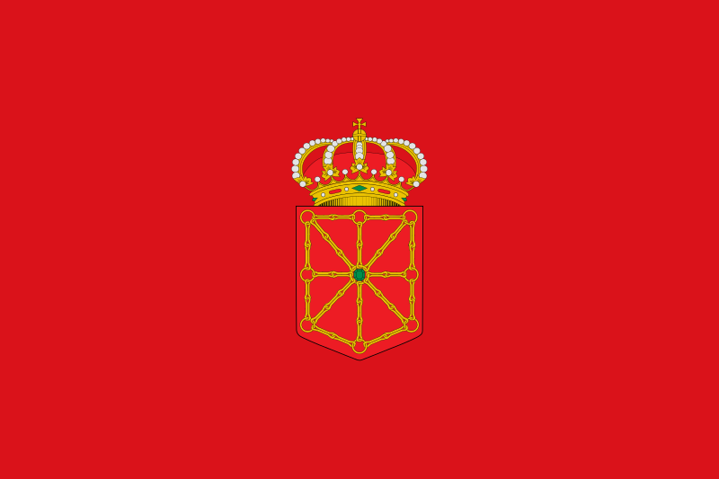
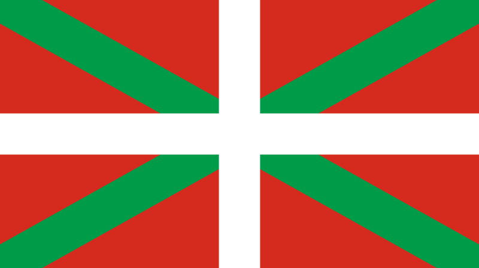

| Comunidad Autonoma | Recetas |
|---|---|
| Andalucia | |
| Aragón |
|
| Asturias | |
| Cantabria | |
| Castilla-La Mancha | |
| Castilla y León | |
| Cataluña |
|
| Extremadura | |
| Galicia |
|
| Islas Baleares | |
| Islas Canarias | |
| La Rioja | |
| Madrid | |
| Murcia | |
| Navarra | |
| País Vasco | |
| Valencia |
Como en casa en ningún sitio
La gastronomía o cocina española son los platos, ingredientes, técnicas y toda la tradición culinaria que se practica en España. Cocina de origen que oscila entre el estilo rural y el costero, y que representa una diversidad fruto de muchas culturas, así como de paisajes y climas.